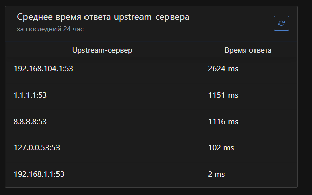

Посидев тут на форуме увидел два основных способа куда ставить AdGuardHome(AGH) вместе с антизапретом(Ant).
У меня стояла как на втором рисунке(V2) сейчас перешел на первый(V1)
{kind=link}
{kind=link}
В случае V1 статистика у AGH красивая, кто куда заходил и.т.д., в общем мне это нравится. Но так как пинг у туннеля в среднем 100-150мс ответ соответственно тоже будет по 100-150мс. И еще кажется(неуверен) так как он получает ответы из-за бугра, соответственно будет давать адреса рядом с VDS-кой, что неочень.
В случае V2 статистики AGH кроме анонимной не будет. Но зато можно прописать статические маршруты до отдельных DNS серверов что будет быстрее.
И собственно вопрос к форумчанам, какой из них лучше? Может лучше скрестить их оба, прописать в V1 маршруты до DNS для Ant?
тут вопрос скорее подменяет ли провайдерский ДНС ответы на “нужные” сайты
бывает замена запросов DNS на любые запросы к разным серверам (по крайней мере на 53 порт по UDP) на провайдерский ДНС
в идеале ИМХО
.ru == 77.88.8.8 или вообще провайдерские. быстро и без особых глюков
остальное обычное DoH/DoT/etc на “провереные” (можно кстати бывший COMSS попробовать. они говорят часть блокировок по ИП обходят через DNS). но тут надо следить если нет механизма запроса у 2+ разных серверов. лично я сталкивался что даже на запрос vk.com можно не получить рабочие IP
а вот все запретное через антизапрет
p.s. AGH не только статистикой хорош. там и фильтры хоть как то но справляются с частью мусора. Запросы за последние 90 дней = Заблокировано запросов: [2,4 тыс.] (2%) из [102,5 тыс.]
Подменяет или нет как-то неважно по мне. Ведь если 1.1.1.1 и 8.8.8.8 пускать через туннель до впски то там уже не до локального провайдера будет(разве что если забугорский провайдер впски будет подменять{маловероятно}).
А вот для не заблокированных .ru == 77.88.8.8 хотелось бы как-то это сделать(AGH так умеет?)
Фильтры на AGH это причина по которой он впринципе и стоит.
Что-то маловато  у меня за последние 24ч = Заблокировано запросов: [8 837](28.9%)
у меня за последние 24ч = Заблокировано запросов: [8 837](28.9%)
p.s. AGH пишет страшные вещи почти под 2 секунды на время ответа 

насчет AGH не уверен. у меня это forwarding называется
ну я почему выше и говорил про (если МОЖНО) разнести isp/ru (можно без DoH/TLS) и другие. что бывает разное странное
секунда+
dog @1.1.1.1 --tls --time A AAAA 2ch.hk
A 2ch.hk. 43s 172.67.159.186
A 2ch.hk. 43s 104.21.9.92
Ran in 1283 ms
2+ секунды = 9.9.9.9 + 1.1.1.1 + opendns (кто быстрей ответит)
dog @127.0.3.1 --time A AAAA 2ch.hk
A 2ch.hk. 3m53s 188.114.96.1
A 2ch.hk. 3m53s 188.114.97.1
Ran in 2445 ms
почти секунда. это свой dnscrypt. при том что часть серверов идет ±100 мс
dog @127.0.0.1 --time A AAAA 2ch.hk
A 2ch.hk. 40m00s 188.114.97.3
A 2ch.hk. 40m00s 188.114.96.3
Ran in 510 ms
p.s. фильтры у меня == 1 браузер (не основной) + сам VPN куда то лезет иногда. остальное идет мимо AdGuard DNS
Без разницы, т.к. для работы АнтиЗапрета используется специальный DNS из контейнера, крутящегося на сервере, а соединение с сервером защищено шифрованием.
Если “до” означает “в локалке”, а “после” означат “на сервере, на котором крутится контейнер”, то второй вариант лучше:
- не нужно думать, на чём поднять AGH в локалке
- если AGH поднят в локалке, то при покидании локалки его действие прекращается. В то время как если он поднят на сервере, то вы можете настроить OpenVPN на смартфоне и иметь все прелести АнтиЗапрета и AGH, даже если покинули дом.
Вместе с тем этот вариант сложнее в настройке.